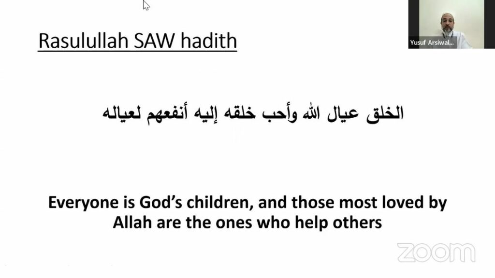
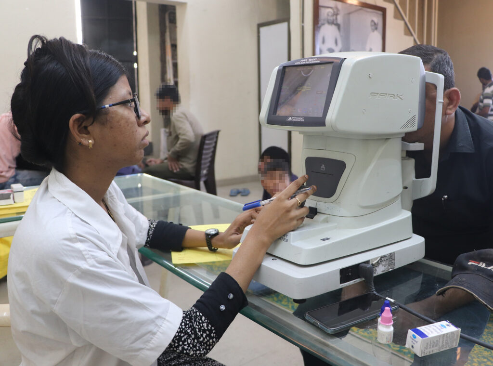

Food
We believe no one must be worried that they cannot afford their next meal. Zahra Hasanaat aims to create food security especially in the areas its programs runs through cooked meal programs as well as ration and food baskets with daily staples such as rice, wheat flour, oil, salt, sugar, lentils, etc.
For individual applicants and families facing financial strain that cannot afford daily food and grains in their household - whether it be a one-off event, or a long-term shortcoming - please fill out the requisite form and team member volunteer will contact you shortly to assist you.
For individuals and organizations wishing to support Zahra Hasanaat's food program - either with financial contributions or with personal time and commitment volunteering or with any other type of support (such as procurement of subsidized grains etc…), your help and support is much appreciated and eagerly awaited. Please fill out the requisite form and a team member will contact you shortly to determine how you can assist us in this noble program

Medical
Emergency relief funds are available for families who are incurring extreme financial difficulty due to medical problems. The Taheri Health Insurance is a subsidized insurance program that provides up to 50% subsidy for those who are unable to afford premiums for coverage up to 5L INR. Appointments with the medical consultation team are also available for referrals and other advice such as financial planning and other resources available for longer-term illness .
Details:
The Taheri Health Insurance is a subsidized insurance program that provides up to 50% subsidy for people with limited incomes who wish to subscribe to health insurance, for policies offering up to Rs 5,00,000 coverage. We provide workshops and consultation sessions to encourage and provide guidance for appropriate plan selection (private or government schemes). For people interested in subscribing to, or learning more about health insurance plans, please fill out the requisite form and a team member will contact you shortly
For individuals facing a sudden, serious and unplanned medical expense, such as an emergency, Syedna Taher Fakhruddin TUS has established a medical grant program that aims to partially financially support individuals facing sudden high medical bills. Emergency relief funds are available for individuals or families who are incurring extreme financial difficulty due to medical problems. If you or a family member are facing such a situation, please fill out the requisite form and a team member will contact you soon
For the overall betterment of the community, Taheri Health Initiative routinely runs screening camps and health check-ups, free of cost (or at highly subsidized rates) to the individual, at the Zahra Hasanaat Center. Recent examples of health camps are featured on the Stories page. If you are a medical provider, NGO, or any institution or individual, interested in offering a medical camp, or setting up a longer term free (or subsidized clinic), or organizing a medical conference of professionals to address current medical problems facing our families and children, please fill out the requisite form and a team member will contact you shortly
Education
Zahra Hasanaat - The Qutbi Jubilee Scholarship Program (QJSP) will provide need based scholarship up to Rs 10,000 per year with no terms or conditions if the combined income of parents is less than Rs 20,000.
Students who can demonstrate outstanding merit, commitment to community service, or extreme and sudden financial hardship are considered for selection by the QJSP committee for school fees <Rs 10,000, secondary education fees of Rs 1 Lakh or greater, or foreign education scholarship of up to $10,000.
Evaluation Criteria of Application:
• Every stage of the process encourages and promotes high standards of academic scholarship as well as community service.
• Criteria for selection is driven by academic merit, financial need and commitment to community service programs. ⅓ of the higher education scholarships are earmarked for young women.
• The selection committee holds phone follow ups and conducts video interviews, after which the selected student consults with a QJSP Community Service Coordinator to finalize his/her plan.
• The student is further networked with mentors and career professionals.
• Renewal of the scholarship is contingent on academic progress and completion of the community service requirement.
• 40% of higher education scholarships are granted in full, while the balance is structured as qardan hasana (an interest free soft student loan repayable after graduation once they start earning).
Financial Advisory
Zahra Hasanaat’s financial advisory services can assist you in starting a business, finding a job or providing emergency financial aid. The goal of these programs is to support families tied over periods of financial disturbance and crisis, by assisting in sound financial planning, saving and investment strategies, starting a business, searching for additional capital and/ or partners, and in providing emergency aid. This program also caters to young professional looking for a foothold in their respective industries by helping find jobs and networking with industry professionals who can help with career guidance and placement
Details:
- Financial planning and long term management: Advisory services to guide families on how to live a financially balanced life, focusing equally on spending, saving, investment, leisure, business growth (if applicable) and other aspects of life. With sound planning, the chances of a future financial calamity or shock are greatly reduced
- Business plan evaluation and investor search: to support potential entrepreneurs and creatives with providing direction-setting and practical business advice on how to kick-start their project off the ground. In addition, this program also introduced entrepreneurs and small business owners with other businessmen/women in the community with relevant experience in their desired field - and potential investors in their business
- Understanding Islamic Finance: Providing guidance and support to those trying to navigate modern day financial institutions while staying within the guidelines of Islamic financial laws
- Urgent financial relief & aid: Emergency financial aid to distressed persons and their families either in the form of grants or interest-free loans
- Job placement: Counseling and networking to facilitate suitable opportunities for positions commensurate with person's experience and education, along with career guidance service to chart the future growth trajectory of talented individuals
Interfaith - Taqreeb
Taqreeb is an Arabic word that literally means "to bring closer." The concept of Taqreeb, as we define it, is the propagation of inter/intra faith and community understanding so that we may better unite for peaceful causes. In our attempt to understand each other's ideologies, it does not mean that we must homogenize diverse groups or ignore differences. It does not mean "taking things lying down" or giving up your rights or culture. We believe there is nothing passive about Taqreeb. It is an active effort to understand differences and commonalities. To apply for a grant for a research project, to participate in the academic conference series or to nominate someone for the Syedna Khuzaima Qutbuddin Harmony Prize find the links below.
Evaluation:
The Syedna Qutbuddin Harmony prize is awarded annually to honour an individual organization whose work has had an exceptional impact in promoting harmony and peace in India as well as globally, and in fostering understanding, affection and respect among members of different communities and denominations.
The prize is awarded by the Qutbi Jubilee Scholarship Program (QJSP), in conjunction with the Taqreeb Academic Conference Series, another initiative of QJSP. Syedna Fakhruddin TUS launched the Syedna Qutbuddin Harmony Prize in 2017 in memory of Syedna Qutbuddin RA, who was an exemplar of promoting harmony and peace.
The Syedna Qutbuddin Harmony Prize is in the form of a plaque of honour, and a monetary award of up to 10,00,000 INR (i.e. 10 lacs) to be used toward further efforts of fostering peaceful and harmonious co-existence.
Nominations may be made for individuals or organizations by themselves or by others. If the nomination is made by a third party, the nominee should have agreed to be considered for the prize. The selection committee will favor those who create and implement meaningful solutions in their local, national, and/or international communities: bridge-building efforts which positively address contentious issues and seek to resolve points of conflict, while promoting dialogue that finds common ground in our shared humanity.
Taqreeb conferences are held to bring together common person and academics from diverse religio-ethno-social backgrounds, to enable live and animated sharing of ideas, concepts and best practices on how to promote peace and harmony in India and in the rest of the world. The goal of these conferences is to setup programs, and sponsor grass-root initiatives that bridge divides. The goal of these conference and meeting of academic minds is to foster both public policy and local initiatives that foster brotherhood, camaraderie and harmony among the various cultures that exist in our wonderful country. Past conferences have been held in 2016 (University of Calcutta) and 2017 (Jawaharlal Nehru University). Details about these conferences can be found in the Stories section.
Conference proposals and collaboration ideas can be shared by filling out the requisite form. Each conference proposal will be considered on its merit, and where found to be aligned with the vision of Taqreeb (interfaith), various modes of conference sponsorship will be discussed.
Inspiring and ground-breaking academics and professionals, looking to make breakthroughs in the field of communal harmony and interfaith concord can apply for research grants and stipends that can further the work in their field. Individuals or organizations looking to secure research grants can do so by filling out the requisite form. Each proposal and concept will be considered on its merits, and where deemed congruent with the Taqreeb's overall goals, will be awarded research grants to complete the work